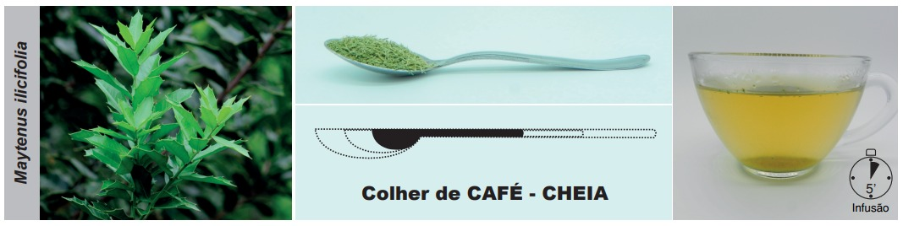

Ao prescrever uma droga vegetal rasurada, recomenda-se que o profissional, sempre que possível, apresente
ao paciente ou ao cuidador uma imagem da parte da planta utilizada. Para isso, é aconselhável utilizar
fontes confiáveis, como os sites botânicos: Flora e Funga do Brasil
(https://reflora.jbrj.gov.br/reflora/
listaBrasil/ConsultaPublicaUC/ConsultaPublicaUC.do#CondicaoTaxonCP),
Tropicos (http://www.tropicos.org/),
International Plant Names Index (http://www.ipni.org/), World Flora
Online (http://www.worldfloraonline.org/)
ou Plants of the World Online (https://powo.science.kew.org).
O profissional também pode orientar o paciente a adquirir a droga vegetal em farmácias que trabalham com fitoterápicos, evitando a compra em supermercados, mercados municipais ou lojas de produtos naturais. Outra alternativa é o fornecimento de uma muda certificada, permitindo que o próprio paciente cultive sua planta medicinal, desde que a utilização da planta fresca seja viável.
Clique na imagem e veja um exemplo.
Por exemplo, a foto da folha de Monteverdia ilicifolia (espinheira-santa) pode ser apresentada ao paciente para que possa certificar-se de estar utilizando a espécie correta e a parte correta da planta medicinal. Espécies incorretamente utilizadas podem resultar em ineficácia (p. ex. Sorocea bonplandii) ou toxicidade (p. ex. Ilex aquifolium).
Folhas frescas da Monteverdia ilicifolia (Mart. ex Reissek) Biral.
Fonte: Flora e Funga do Brasil. Monteverdia ilicifolia (Mart. ex Reissek) Biral (Biral, s.d.).
Nas monografias de plantas medicinais apresentadas neste curso, muitas vezes você irá encontrar a fotografia da droga vegetal in natura e seca rasurada, triturada ou pulverizada e o aspecto do infuso ou decocto, como na de preparo do infuso de Monteverdia ilicifolia (Maytenus ilicifolia).

Fonte: Pereira et al., 2020.